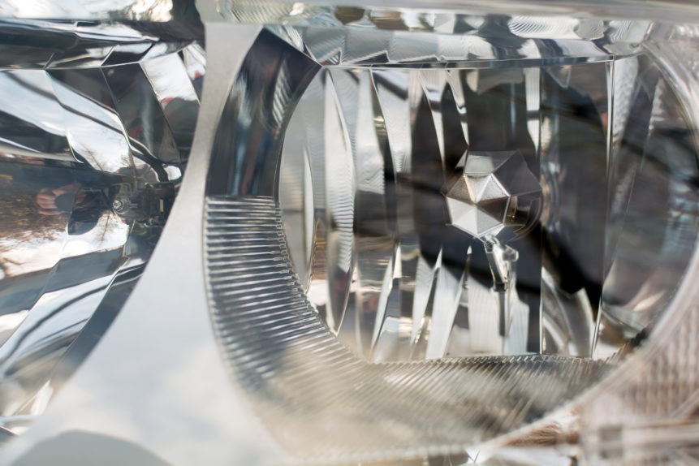
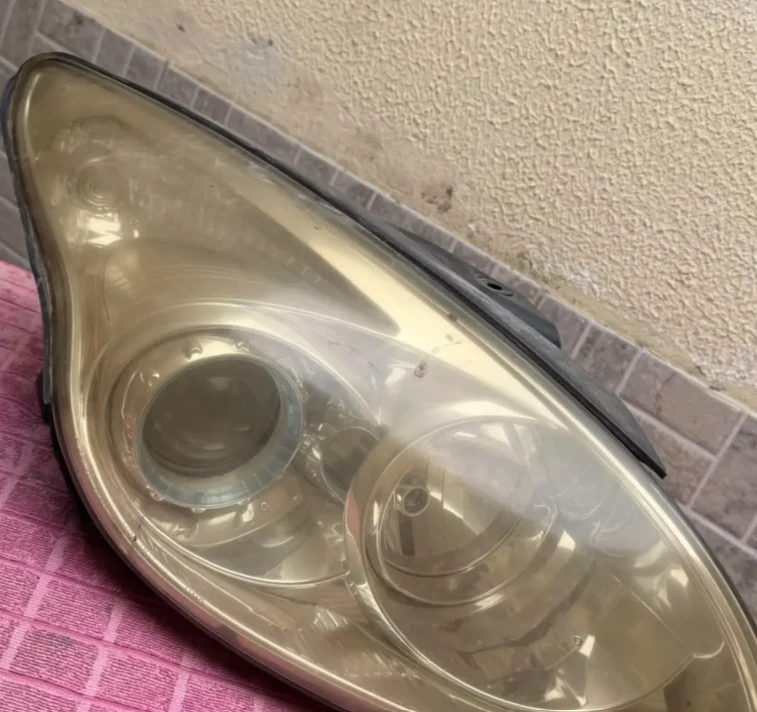
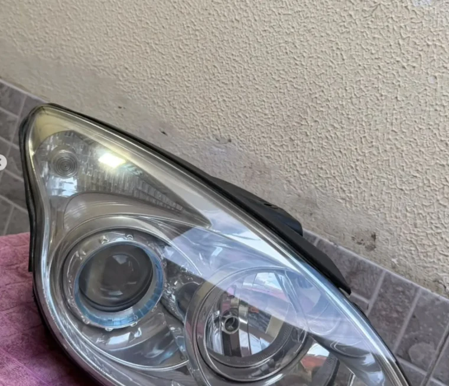
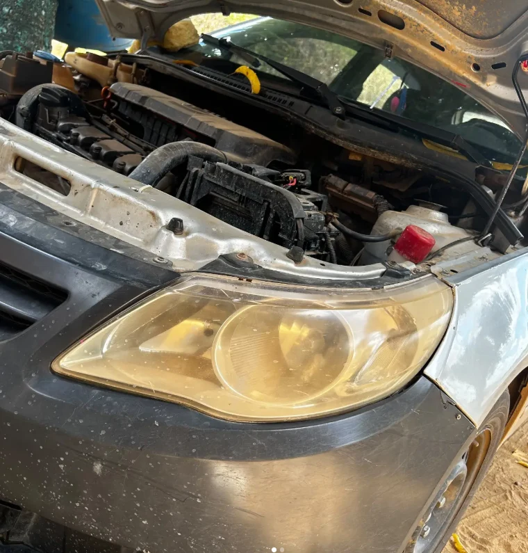
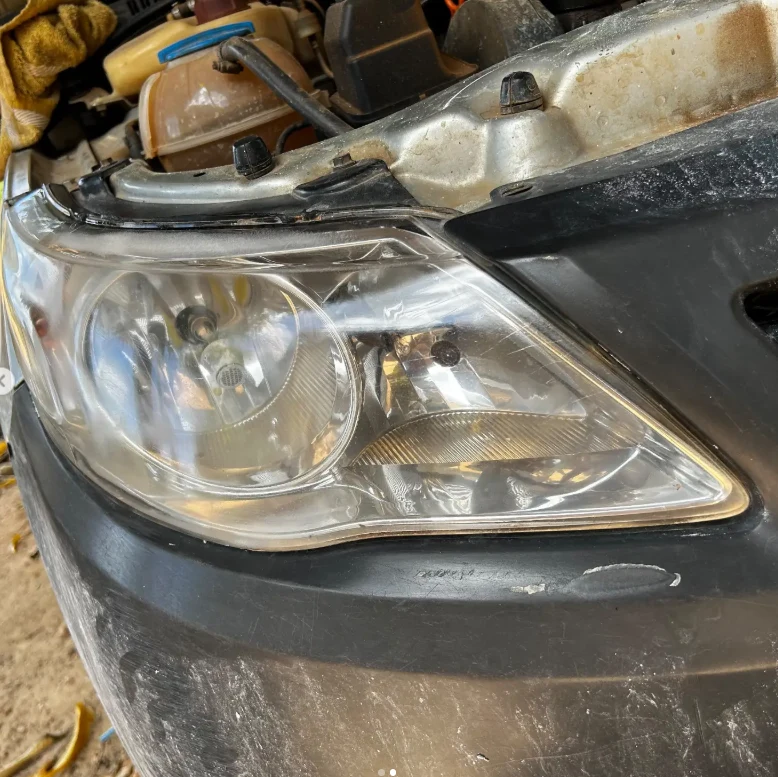
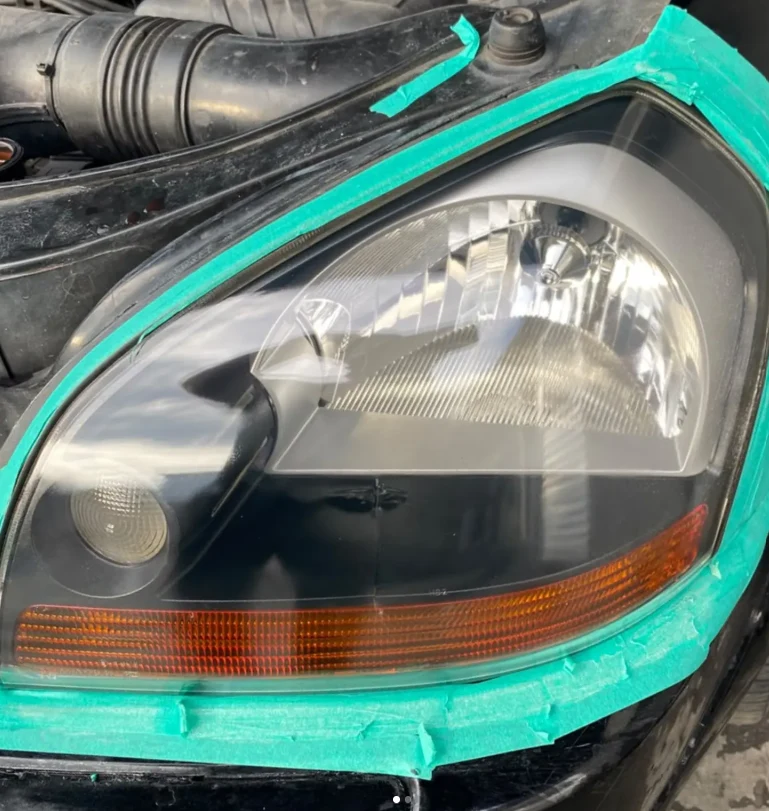

Avaliação por fotos
Conte o modelo e o ano do carro. Mostre como estão os faróis para conversar sobre a indicação do serviço.
Restauração de faróis a domicílio, com lixamento e aplicação de polímero. Você combina o local. A Brilux67 cuida dos faróis.
Foto: Grégory Costa / Pexels.

O cuidado começa no que você vê todos os dias. Um farol amarelado ou opaco muda o aspecto do carro e merece uma avaliação.
A Brilux67 restaura faróis com lixamento e aplicação de polímero. O atendimento é a domicílio, em local e horário combinados pelo WhatsApp.
Acompanhe @brilux67restauracaoO serviço parte de uma avaliação. Envie fotos para entender o que pode ser feito na lente do seu veículo.
Tratamento da superfície amarelada ou opaca com lixamento e aplicação de polímero, conforme a condição da lente.
Consultar meu veículoConte o modelo e o ano do carro. Mostre como estão os faróis para conversar sobre a indicação do serviço.
Consulte a disponibilidade para o seu bairro e combine o local do atendimento, sem precisar buscar uma oficina.
Restauração de faróis com lixamento e aplicação de polímero. Consulte o enquadramento pelo modelo e ano do seu carro.
A partir deR$ 300,00
Consultar categoriaA partir deR$ 350,00
Consultar categoriaA partir deR$ 399,90
Consultar categoriaA partir deR$ 444,90
Consultar categoriaValores iniciais por categoria. Envie fotos dos faróis e informe seu bairro para confirmar o orçamento e a disponibilidade do atendimento a domicílio.
Registros de serviços da Brilux67. Escolha um atendimento para ver as fotos, sem simulação do resultado.




Cada lente tem uma condição. A avaliação orienta o resultado esperado para o seu carro.
Mais registros no InstagramVerificamos o aspecto do farol e conversamos sobre o que o tratamento pode recuperar.
A superfície é preparada e lixada para tratar a camada desgastada da lente.
A aplicação do polímero faz parte do processo de restauração da transparência.
Ao final, você acompanha o aspecto da lente e recebe as orientações sobre o cuidado após o serviço.

O atendimento é a domicílio. Informe seu bairro e a cidade para consultar a disponibilidade e combinar os detalhes do local.
Mande uma foto dos faróis, o modelo do veículo e o ano. Assim, a conversa já começa com o que importa para o seu orçamento.
Consultar meu bairroSeu orçamento começa com uma conversa. Fale com a Brilux67 e consulte valores, agenda e disponibilidade para o seu endereço.
Antes de agendar, entenda como funciona o atendimento da Brilux67.
Sim. Informe o bairro e a cidade pelo WhatsApp para consultar a disponibilidade e combinar local e horário.
O processo da Brilux67 é feito com lixamento e aplicação de polímero. Conte o estado dos seus faróis para avaliarmos a indicação.
A indicação depende da condição da lente. Amarelamento e opacidade podem ser avaliados para restauração; trincas, infiltração e problemas internos precisam de uma análise específica. Envie fotos antes de agendar.
Os valores começam em R$ 300,00 para Popular, R$ 350,00 para SUV / Pickup / Médio, R$ 399,90 para Premium e R$ 444,90 para Premium Luxo. Confira a tabela por categoria. O enquadramento do veículo, o orçamento final e o prazo são confirmados pelo WhatsApp.
Envie o modelo e o ano do carro, fotos dos faróis e seu bairro e cidade pelo WhatsApp (11) 98446-1680. A Brilux67 conversa com você sobre os próximos passos.
Além dos registros desta página, acompanhe o Instagram @brilux67restauracao para conhecer mais do trabalho.